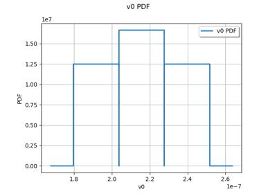

Run simulations with time-independent inputs#
If your model’s inputs are time-independent scalars, you can handle it with an object FMUPointToFieldFunction. These examples below show you how to proceed.
The cantilever beam#
These two examples rely on a very simple time-independent model to understand how to use OTFMI. The first one show you how to use the FMUPointToFieldFunction object to run simulations, while the second describes how to run simulations with OTFMI’s low-level functions.


Run simulations with FMUPointToFieldFunction
Run simulations with FMUPointToFieldFunction
The epidemiological model#
Here is another set of examples based on model of disease propagation. The inputs are still time-independent, but now, the output is time-dependent.